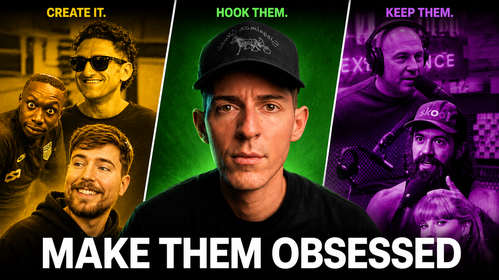
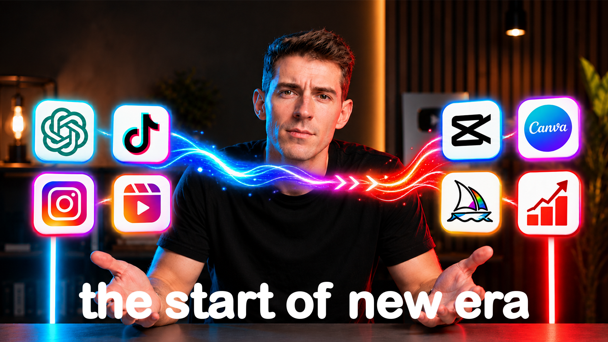

.jpg) MASCOT
MASCOTCRAFT
 VISUAL
VISUALSYSTEMS
HIERARCHY
 BRAND
BRANDWORLDS
.jpg) AI + NODE
AI + NODEPIPELINES
.jpg) STORY
STORYFIRST
Making good ideas feel impossible to ignore
I connect the dots between people, culture, and brands — then turn those dots into visual systems and campaigns with a clear point of view.
03. Define Their Narrative
Turn their expertise into a clear, compelling story people want to follow — with the right point of view, content pillars and storytelling formats.
01 / SELECTED PROJECTS
Proof of play.
Five projects. Five different rabbit holes.
One very curious
brain.
Thumbnails built to stop the scroll.






How I unpack a creative challenge.
Great results don't just happen. This is the hand-retouched, data-driven workflow I apply to every brand and pixel—built to move metrics and capture eyeballs.
dig for the tension
I examine the category and its audience. I identify where others are safe or boring to pinpoint the visual white space.
visual first-principles
I build the structural visual system. Establishing typographic scale, palette anchors, and distinct subject hierarchy to ensure everything reads instantly on screen.
retouch & reinforce
No generic outputs. I blend AI prototyping (ComfyUI) with Photoshop hand-crafting to produce sharp, original assets that convert.
test & iterate
I view performance stats as creative guidance. Examining click-through rates, views, and app placement behavior to iterate on the visuals.
02 / THE PERSON BEHIND THE PIXELS
Part strategist.
Part storyteller.
Always
curious.
.png)
Hello, I’m Ishwari Kokane — a creative thinker who likes asking better questions before jumping to shiny answers.
.png)
I work across brand strategy, creative direction, and performance-driven visual systems. My favourite work lives where a sharp insight meets an unexpected idea, and where a brand sounds and feels unmistakably like itself.
“The best ideas don't just look different.
They make
you see something differently.”
STUFF TO KNOW.
Hiring full-time or kicking off a brand sprint? No gatekeeping—here is what working together actually looks like.
Hire Me · Let's Talk ↗What kind of roles or projects are you open to? +
Full-time graphic & brand design roles (remote or hybrid in Pune/Bangalore) as well as select freelance brand identity, campaign systems, and AI-assisted visual direction sprints.
What do I actually get when we work together? +
Never just a pretty static mockup. You get the strategic "why," a cohesive visual system (typography, color, layout rules), and production-ready assets built to scale across social, web, and print.
How do you use AI in your creative workflow? +
As a precision production tool—not a shortcut for thinking. I build reproducible node-based pipelines (ComfyUI / InvokeAI) alongside Photoshop and Figma to keep lighting, product fidelity, and brand identity 100% consistent.
How fast can we kick something off? +
Usually within 48 hours. Send over the brief, deck, or half-baked idea—and we will map out the sharpest angle before touching a single artboard.